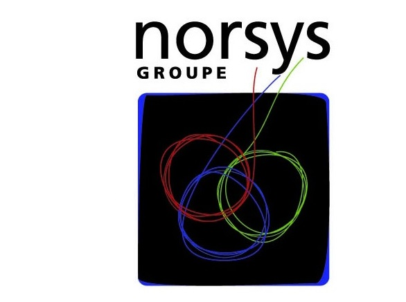

Et la diversité dans tout ça?
Women In Technology
Qui sommes-nous ?
Nous sommes les WIT pour Women In Technology, un user group genre Duchess version Nantaise
Nos actions :
Mettre en avant des modèles féminins pour montrer que c'est possible et encourager les autres femmes. Favoriser les échanges'
Discriminations
Principaux critères de discrimination cités par les victimes
le sexe (31%, + 9 points)
l’origine ethnique (27%, +10 points)
la grossesse (20%)
la nationalité, les convictions religieuses (19%, +6 points)
l’apparence physique (+6 points).
40% des victimes de discrimination ne disent rien, parce qu’elles pensent que cela n’aurait rien changé (donnée stable).
D'hier à aujourd'hui
Ada Lovelace
Majorité de femmes (clavier => pas un métier d'homme)
Personal computer : inégalité d'accès puis dégradation progressive de la situation
Carrières dans la technique de moins en moins longues
De nombreuses femmes dans l'histoire de l'info (Grete Hermann, Grace Hopper, Jean Bartik...)
Jeunisme touches les US http://www.sfgate.com/business/bottomline/article/In-Silicon-Valley-age-can-be-a-curse-4742365.php
Enjeux sociaux et RH
Renouvellement et enrichissement des ressources humainesPartage des valeurs de l'entreprise => Facteur d'engagement Développement international et ouverture de marchésDétection et gestion des talents
Pallier à une pénurie de compétences
Renouvellement et enrichissement des ressources humaines présentesPartage des valeurs de l'entreprise avec les salariés. Elle augmente leur adhésion, leur implication et leur motivation, donc leur engagement.Stratégie de développement international et d’ouvertures de marchés
détection et gestion des talents => (encore dans de nombreuses entreprises restreintes par des caractéristiques de formation initiale, d’âge ou de genre, notamment.)
Intérêts économiques et impacts commerciaux
La diversité augmenterait la rentabilité de 5 à 15%
Elle permet d'accroitre la qualité de la main d’œuvre en attirant le plus de profils d'origines diverses
Diversification de la clientèleProximité avec les clientsMeilleure identification des besoins et des attentes
les équipes les plus performantes sont celles qui ont le taux d’emploi de travailleurs handicapés le plus élevé, un encadrement de proximité fortement féminisé et un fort emploi de salariés seniors
Réponse à une diversification de la clientèle en micro-segments caractérisés par des valeurs, des comportements et des priorités spécifiques
La proximité entre les clients et les populations de l’entreprise (augmentation de la qualité de service )
Mieux identifier les besoins et les attentes dans toute leur diversité
Etude réalisée par Goodwill Management pour IMS-Entreprendre pour la Cité à partir de quatre grandes entreprises (AXA, L’Oréal, Orange et Vinci)
Cas des startups !
Dire qu'on a besoin de l'unité au début car il faut aller dans le même sens.
Cependant, il est important de penser à introduire la diversité rapidement.
Comment ?
Lors du recrutement
Quelques exemples
Attention portée sur l'image donnée par les supports de communication
"Ambassadeurs" de la diversité qui expliquent leurs parcours et pourquoi ils ont choisi de travailler làNeutralité des tests de sélectionAnonymisation des CVs
CV anonyme (Loi du 31 mars 2006 pour l'égalité des chances) pour les entreprises de plus de 50 salariés
Dans l'entreprise
Charte de la Diversité
Texte d'engagement proposé à la signature de toute entreprise, quelle que soit sa taille, qui condamne les discriminations dans le domaine de l'emploi et décide d'œuvrer en faveur de la diversité.
http://www.charte-diversite.com
Quelques signataires dans l'IT en Pays de la Loire : ADN'Ouest, ASI Informatique, NeoSoft
Au niveau national : Bouygues Telecom, Alcatel-Lucent, Orange, SII Strasbourg, Ippon Technologies, Zenika, Norsys
Législation française
Le Défenseur des Droits (anciennement Halde)
Quota de salariés handicapés dans les entreprises de plus de 20 employés
Représentation équilibrée des femmes et des hommes dans les conseils d'administrationToutes les actions en cours pour l'égalité homme / femme (congés parentaux, etc)
Plan Junior - Senior
En contrepartie, la CNIL interdit tout recueil de données relatives à l'origine ethnique et raciale => pas de stats pour la Halde...
(loi du 10 juillet 1987)
(loi n° 2011-103 du 27 janvier 2011)
Quelques actions en Europe
Label Egalité et Diversité en Belgique
Aide pour des plans diversités dans les entreprises en Belgique
En Grande-Bretagne, en 2004, plan d'action en 10 points visant à augmenter la présence de groupes cibles
En Suède, un organe est spécialement chargé des questions de discrimination raciale .
...
pour les travailleurs agés, d'origine étrangère ou handicapés
(personnes handicapées, d'origine étrangère, femmes) et sélection de champions de la divsersité qui se réunissent régulièrement pour améliorer la situation.
Il n'a aucun pouvoir de décision. Sa mission est de conseiller les particuliers, les autorités et les partenaires sociaux sur toutes questions en relation avec la lutte contre le racisme.
Actions pour une égalité
Actions pour une égalité professionnelle
Fixer des objectifs
Faire un état des lieux
Ne pas multiplier les actions
Identifier le public cible
Choisir le bon moment
Miser sur le volontariat
se poser la question du pourquoi. A quel besoin répond la politique d’égalité professionnelle ? S’agit-il simplement de respecter la loi, de mobiliser les salariés autour d’un sujet fédérateur, de changer les processus RH dans la société ou encore de répondre à une exigence des clients ou donneurs d’ordres ?
Quelles actions ont déjà été mises en place, quels ont été les résultats ? Qui pilotera les actions à venir, comment seront mesurés leurs effets ? La phase préparatoire devra aussi lister les outils qui seront mobilisés pour faire la promotion de l’égalité professionnelle.
Multiplier les actions sans cohérence n’est pas la meilleure garantie pour aller vers plus d’égalité professionnelle. Les objectifs pédagogiques sont à rapprocher des objectifs stratégiques de l’entreprise, à commencer par le respect du droit. Il est nécessaire de rappeler que la responsabilité au niveau de la lutte contre les discriminations est du ressort de l’entreprise, pas des salariés.
populations-clés capables d’impulser des changements structurels : les dirigeants (via le Comex ou le Codir par exemple), les managers, les services de recrutements ou les responsables formation.
Pour sensibiliser à l’égalité professionnelle, il est important de choisir le bon moment. Dès le recrutement ou pendant l’intégration des nouveaux salariés, pendant un séminaire ou à l’occasion d’événements liés à l’actualité comme la Journée internationale des femmes, la signature de l’accord d’entreprise…
La question du volontariat autour des actions est à se poser aussi. Rendre obligatoire la participation à des événements autour de la diversité peut accentuer la résistance aux changements. Sur des sujets sociétaux comme l’égalité pro, cette résistance est encore plus forte.
http://www.google.com/diversity/
Ils ont anonymisé leur process à fond ! le comité final de sélection n'a accès qu'aux évaluations et au fait qu'il ait un diplome Bac+5 etc...
Ils ont ainsi augmenté de près de 30% leur diversité
Le principe est simple ! à compétences égales, les femmes seront favorisées ! Idem, ils vont chercher eux-mêmes les filles pour leur proposer
des augmentations.

la SSII Norsys (250 salariés, 22 M€ de chiffre d’affaires) a généralisé depuis 2006 l’utilisation du CV anonyme pour toutes ses offres d’emploi,
avec comme conséquence une étonnante diversification des profils : en cinq ans, la part des femmes dans l’entreprise a plus que doublé,
passant de 10 % à 24 %, celle des salariés âgés de plus de 40 ans est passée de 8 % à 14 % et celle des plus de 50 ans de 0,5 % à 4 %.
Ils suppriment le bloc état civil, les loisirs et les expériences de plus de quinze ans
les managers puis l’ensemble des salariés ont reçu une formation sur le thème « stéréotypes et préjugés »
Chaque candidat est convoqué à plusieurs entretiens avec différents responsables, qui échangent ensuite leurs points de vue et prennent la décision de manière collégiale afin d’éviter, là encore, un jugement trop personnel et subjectif
Et encore ?
Concours photo "La diversité en image"Campagne d'affichage pour les journées internationales (de la femme, contre le racisme, contre l'homophobie, ...)
Calendrier des fêtes religieuses (catholiques, juives et musulmanes)Semaine thématique sur le respect des différences , cuisine du monde, ...
Guide d'aide à l'accueil d'un collaborateur avec un handicap...
Parler des avantages sociaux
Actions au niveau individuel
Ce sont souvent de petites choses qui renforcent les stéréotypes
Little things reinforce stereotypes and implicit biases instead of challenging them.
They insulate members of the dominant group from having to confront their own biases.
They communicate underlying attitudes and community norms.
Language may or may not shape the way we think, but it is a powerful signal about what sort of behavior is and is not acceptable, and what your personal expectations are.
Etre attentif à sa manière de communiquer
Apprendre à dire "pardon"
Ne plus rester silencieux
Références


 http://www.defenseurdesdroits.fr/connaitre-son-action/la-lutte-contre-les-discriminations
http://www.defenseurdesdroits.fr/connaitre-son-action/la-lutte-contre-les-discriminations